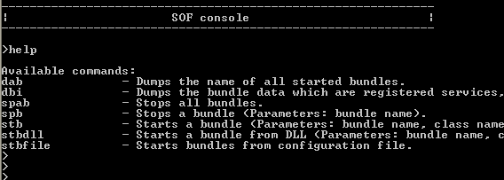

Title: SOF - A modularization framework for C++
Author: Mattheus
Email: mattheus@t-online.de
Member ID: 3337502
Language: C++
Platform: Platform independent
Technology: -
Level: Intermediate
Description: The article describes the usage of a modularization framework called SOF.
Section: Platforms, Frameworks & Libraries
SubSection: Libraries
License: GNU General Public License (GPL)

SOF (Service Oriented Framework) provides a OS independent infrastructure for developing component based software. That means the framework helps developers to build software systems consisting of modules which are communicating via clearly defined service interfaces with other modules of the system. Components can be started and stopped at runtime and the components are notified about the lifecycle of other components if necessary. It can be chosen whether the components are loaded locally (here the component code is linked to the class which starts the framework) or loaded dynamically from shared libraries (UNIX) or dynamic link libraries (Windows) for example. SOF is implemented in standard C++ and the SOF API is very similar to the OSGI API (see OSGI).
Each module (also called 'bundle') consists of following code parts:
sof::framework::IBundleActivator interface. IMultiplier. The second
bundle listens for
service objects of type IMultiplier. As soon as
a service object of type IMultiplier is
available the second bundle calls the getValue()
method of the service
object.
IBundleActivator interfaceIBundleActivator interface
provides three methods (destructor, start, stop),
which have to be
implemented for creating, starting and stopping a bundle. The example
below shows the implementation of the IBundleActivator
interface for 'bundle1' whereas the destructor, start
and stop method
are not filled with code yet.#ifndef BUNDLE_ACTIVATORImplementation:
#define BUNDLE_ACTIVATOR1_H
#include "sof/framework/IBundleActivator.h"
#include "sof/framework/IBundleContext.h"
using namespace sof::framework;
class BundleActivator1 : public IBundleActivator
{
public:
virtual ~BundleActivator1();
virtual void start( IBundleContext::ConstPtr context
virtual void stop( IBundleContext::ConstPtr context );
};
#endif
#include "BundleActivator1.h"
#include "sof/instantiation/ObjectCreator.h"
using namespace sof::instantiation;
using namespace sof::framework;
BundleActivator1::~BundleActivator1()
{
// Deallocate memory
}
void BundleActivator1::start(IBundleContext::ConstPtr context)
{
// Add code for registering services and service listeners
}
void BundleActivator1::stop(IBundleContext::ConstPtr context)
{
// Add code for deregistering services and service listeners
}
REGISTER_BUNDLE_ACTIVATOR_CLASS( "BundleActivator1", BundleActivator1 )
Only the framework calls the start
and stop methods for starting and
stopping the
bundle. When these methods are called, a parameter of type
IBundleContext is passed which allows
communicating with the framework (registering/deregistering services,
service listeners
etc.). The framework is also responsible for creating an instance of the
bundle activator class, before the bundle is started. For this the type
and the name of the bundle activator class (here BundleActivator1)
have
to be registered at the framework by using the
REGISTER_BUNDLE_ACTIVATOR_CLASS macro.
IService interface
which
does not provide any
methods. It is only a marker interface. Our interface for the
communication between 'bundle1' and 'bundle2' defines only one
method which multiplies two integer values and returns the result of
the multiplication. #ifndef IMULTIPLIER_HThe implementation of the service interface is done in the 'IMultiplierImpl.h' file which is not shown here.
#define IMULTIPLIER_H
#include "sof/framework/IService.h"
using namespace sof::framework;
class IMultiplier : public IService
{
public:
virtual int multiply( int x, int y ) = 0;
};
#endif
IBundleContext instance which is
passed to the start and
stop method of the bundle activator class is
used. The start method of 'bundle1' creates an instance of the IMultiplierImpl class at first. Then a Properties object is created which holds key/value pairs of type string and allows specifying the service object in detail. Finally the service object is registered at the framework by calling the registerService method of the IBundleContext object. Three parameters have to be passed to the registerService call:Properties objectstop method.#include "BundleActivator1.h"
#include "sof/instantiation/ObjectCreator.h"
#include "sof/framework/Properties.h"
#include "IMultiplier.h"
#include "IMultiplierImpl.h"
using namespace sof::instantiation;
using namespace sof::framework;
BundleActivator1::~BundleActivator1()
{
// Deallocate memory
}
void BundleActivator1::start(IBundleContext::ConstPtr context)
{
this->service = new IMultiplierImpl();
Properties props;
props.put( "instance", "1" );
this->serviceReg = context->registerService( "IMultiplier", this->service, props );
}
void BundleActivator1::stop(IBundleContext::ConstPtr context)
{
this->serviceReg->unregister();
delete this->serviceReg;
delete this->service;
}
REGISTER_BUNDLE_ACTIVATOR_CLASS( "BundleActivator1", BundleActivator1 )
ServiceTracker object which expects three parameters in the constructor:IBundleContext objectIServiceTrackerCustomizer interface (in the following example it is implemented by the bundle activator class)startTracking method of the ServiceTracker
instance is called, the service tracker begins to listen for registered
services of name 'IMultiplier'. If there is a registered service object
of name 'IMultiplier' (no matter the service was registered before or
after the service tracker was started) the framework notifies the IServiceTrackerCustomizer
object (here the bundle activator which is implementing this
interface) of the existing service object by calling the addingService method. In the addingService
method you can ask for the name or the properties of the found service
in order to check whether it is the service object you are interested
in. If so the service object can be retrieved from the service
reference and casted to the service interface (IMultiplier). Now the service can be used. It must be pointed out that the addingService
method has to return a boolean value. You have to return true, if you are
interested in using the found service, otherwise false.IMultiplier service is deregistered by the other bundle the relating service trackers are notified by a removedService method call.stopTracking method of the ServiceTracker object has to be called.#include "BundleActivator2.h"
#include <iostream>
#include "sof/instantiation/ObjectCreator.h"
#include "IServiceA.h"
using namespace std;
using namespace sof::instantiation;
BundleActivator2::~BundleActivator2()
{
// Deallocate memory
}
void BundleActivator2::start(IBundleContext::ConstPtr context)
{
this->tracker = new ServiceTracker( context, "IMultiplier", this );
this->tracker->startTracking();
}
void BundleActivator2::stop(IBundleContext::ConstPtr context)
{
this->tracker->stopTracking();
delete ( this->tracker );
}
bool BundleActivator2::addingService( const ServiceReference& ref )
{
if ( ref.getServiceName() == "IMultiplier" )
{
Properties props = ref.getServiceProperties();
if ( props.get( "instance" ) == "1" )
{
this->service = static_cast<IMultiplier*> ( ref.getService() );
cout << "[BundleActivator2#addingService] Calling IMultiplier..." << endl;
int value = this->service->multiply( 47, 11 );
cout << "[BundleActivator2#addingService] Returned value of IMultiplier: " << value << endl;
return true;
}
else
{
return false;
}
}
else
{
return false;
}
}
void BundleActivator2::removedService( const ServiceReference& ref )
{
}
REGISTER_BUNDLE_ACTIVATOR_CLASS( "BundleActivator2", BundleActivator2 )
IMultiplier,
the other bundle listens for this service object and calls it. Now we
want to create two bundle libraries, one library for each
bundle. Since this code example ought to be run on the Windows
platform we have to implement a Windows DLL:#include <windows.h>The
#include <stdlib.h>
#include <string>
#include <iostream>
#include "sof/instantiation/ObjectCreator.h"
#include "sof/framework/IBundleActivator.h"
#define DLL extern "C" __declspec(dllexport)
using namespace std;
using namespace sof::instantiation;
using namespace sof::framework;
BOOL APIENTRY DllMain( HANDLE hModule,
DWORD ul_reason_for_call,
LPVOID lpReserved
)
{
return TRUE;
}
DLL IBundleActivator* createObject( const string &className )
{
ObjectCreator<IBundleActivator> OC_BUNDLE_ACTIVATOR;
return OC_BUNDLE_ACTIVATOR.createObject( className );
}
dllMain method represents the entry point for the DLL where initialization calls (not necessary) can be done. The dllMain
method is defined by the Windows platform and is called when the DLL is
loaded. SOF itself requires an implementation of the createObject method which provides the functionality for creating IBundleActivator instances. This 'dll.cpp' file does not have to be changed for the implementation of other bundles. It can be always reused.Launcher has to be created (see 'sof_examples.cpp' file). The Launcher class represents a template based class which allows the specification of aSingleThreaded class and the WinDllCreator class as implementations of the threading and creation policies. SingleThreaded class requires that framework
calls (e.g. registering/deregistering services and service listeners)
are done in a single thread, otherwise race conditions can occur.WinDllCreator class can be only used for the Windows platform and supports the loading of bundles which are built as Windows DLLs.Launcher class is created, the bundle configuration for each bundle must be specified. A BundleConfiguration contains all relevant information of a bundle for creating and starting it:Launcher instance by calling the start method. This is the trigger for starting the framework, creating and starting the bundle activators.#include <iostream>The following sequence chart shows the startup procedure in a simplified way.
#include <vector>
#include "sof/framework/Launcher.h"
#include "sof/framework/Global.h"
#include "sof/config/BundleConfiguration.h"
#include "sof/instantiation/win/WinDllCreator.h"
#include "sof/util/threading/SingleThreaded.h"
using namespace std;
using namespace sof::framework;
using namespace sof::config;
using namespace sof::util::threading;
using namespace sof::instantiation::win;
int main(int argc, char* argv[])
{
Launcher<SingleThreaded,WinDllCreator> launcher;
// Specifying the bundle configuration
BundleConfiguration bundle1( "bundle1", "BundleActivator1", ".", "sof_examples_bundle1.dll" );
BundleConfiguration bundle2( "bundle2", "BundleActivator2", ".", "sof_examples_bundle2.dll" );
vector<BundleConfiguration> configuration;
configuration.push_back( bundle1 );
configuration.push_back( bundle2 );
// Starting the framework
launcher.start( configuration );
// Starting the administration console for interacting with the framework
launcher.startAdministrationBundle();
return 0;
}